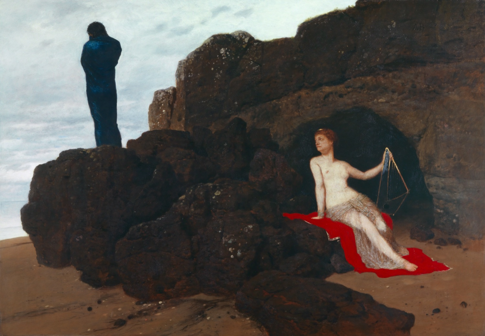
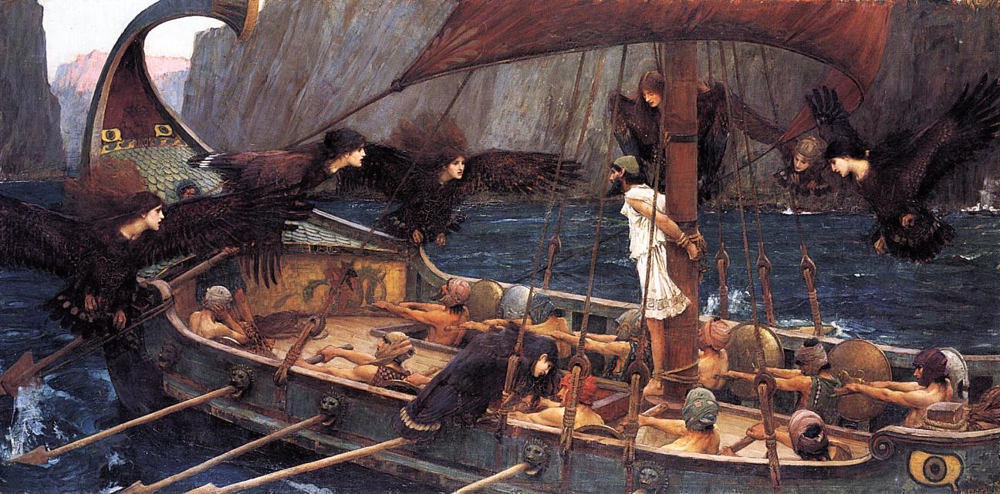

A man leaves home for war and comes back twenty years later. Ten years of fighting, then ten years lost at sea, all to reach one small rocky island where his wife and his grown son are waiting, and where almost everyone has long since decided he is dead. That is the Odyssey. It is about twenty-eight centuries old, and it is the story the whole Western imagination grew out of.
Homer, whoever he was, left two poems. The Iliad is about a war, and about a young man, Achilles, who chooses a short and blazing life over a long and quiet one. The Odyssey is the other kind of story. Its hero, Odysseus, just wants to grow old at home. He is not the strongest man in the room and he knows it, so he lies, hides, waits, and thinks his way out instead. He is the first hero in Western literature who wins by being clever rather than strong, and the poem loves him for it.
It tells you what kind of man he is in its very first word, and that word has been starting fights for centuries. In Greek it is polytropos, literally "of many turns." It means both a man the world keeps spinning around, blown off course for years, and a man of many tricks, who can turn any situation to his own advantage. Wandering and cunning, fused in one word. Here is how that opening line has come into English over four hundred years.
ἄνδρα μοι ἔννεπε, μοῦσα, πολύτροπον…Book 1, line 1 · the first word the poem says about its hero is polytropon, "of many turns"
- The man, O Muse, inform, that many a way wound with his wisdom to his wished stay.Chapman, 1615
- The man for wisdom's various arts renown'd.Pope, 1725
- Tell me, O Muse, of that ingenious hero who travelled far and wide.Butler, 1900
- Tell me, Muse, of the man of many ways, who was driven far journeys.Lattimore, 1965
- Sing in me, Muse, and through me tell the story of that man skilled in all ways of contending.Fitzgerald, 1961
- Sing to me of the man, Muse, the man of twists and turns.Fagles, 1996
- Tell me about a complicated man.Wilson, 2017
Same line, same man. One translator makes him a paragon, renowned "for wisdom's various arts." Another calls him "the man of twists and turns." And Emily Wilson, in 2017, just calls him complicated. That plain word does something the grand ones do not. A complicated man is not simply clever; he is hard to judge, and maybe not entirely good. Which is exactly the man the rest of the poem shows you: a liar, a raider, a husband, a survivor, often all at once.
We are going to walk the whole poem in Wilson's translation. There are dozens of good ones, and the famous older versions show up all the way through, but hers is the one to read first. It was the first English Odyssey published by a woman, in 2017, more than four hundred years after the first English one. She wrote it in plain, quick iambic pentameter, the natural meter of English, and held herself to exactly as many lines as the Greek, so it moves at Homer's speed instead of swelling up the way translations usually do. Nothing in it hides behind grandeur. You always know exactly what is happening.

One thing to know before we start, because you will feel it on every page. The same phrases keep coming back. Dawn is forever "rosy-fingered," the sea is "wine-dark," Odysseus is "much-enduring." These are not a tic. They are tools.
Eight stops, following Odysseus from the war to his own front door. His words, in Wilson's English, come first at each stop. Then we unpack them. Where a famous line has been turned into English a dozen ways, open the panel to see the translators split.
Stop 1 / The opening lines
A complicated man
Wilson / Book 1, the proem
Tell me about a complicated man.Muse, tell me how he wandered and was lostwhen he had wrecked the holy town of Troy,and where he went, and who he met, the painhe suffered in the storms at sea, and howhe worked to save his life and bring his menback home. He failed to keep them safe; poor fools,they ate the Sun God's cattle, and the godkept them from home. Now goddess, child of Zeus,tell the old story for our modern times.
Ten lines, and the whole poem is already in the room. A wanderer, lost at sea. A city he destroyed behind him. Men he tried and failed to save. And at the very front, before the name Odysseus is even spoken, that one word for the man himself: complicated.
This is the hero who is not a fighter first. Greek has a word for his real talent, metis, which means cunning, craft, the intelligence that finds an angle. Odysseus is its human form. Where Achilles in the Iliad would put his head down and charge, Odysseus looks for the trick, the disguise, the lie that gets him through. The poem is openly thrilled by this. It calls him a master of schemes and is not embarrassed to.
Notice what the proem refuses to do, though. It will not call him good. It tells you he sacked a holy city, that his own recklessness and his crew's got everyone but him killed. Wilson's "complicated" keeps that door open in a way the older, grander translations quietly shut. He is a man worth admiring and a man who leaves a trail of bodies, and the poem asks you to hold both for twelve thousand lines.
And the goal is named right away: home. Not glory, not conquest, not a throne in some better place. The engine of this story is nostos, the Greek word for homecoming, the safe return. It is the root we kept in "nostalgia," the ache for a place you cannot get back to. Everything Odysseus survives, he survives to get home. That is what makes him strange among heroes, and it is what makes the poem feel modern. He is trying to do the most ordinary thing in the world.
One word, eight ways: polytropos
ἄνδρα μοι ἔννεπε, μοῦσα, πολύτροπον, ὃς μάλα πολλὰ πλάγχθη…
andra moi ennepe, mousa, polytropon, hos mala polla planchthē...
The first real word about the hero is polytropon: poly (many) + tropos (turn). It points two directions at once, a man turned by the world (tossed around, much-wandering) and a man of turns (shifty, versatile, wily). No single English word holds both, so every translator has to choose what to lose.
The Elizabethan version Keats stayed up all night reading. It keeps the literal "many a way" and ties it straight to wisdom, so the wandering and the cleverness are one motion.
Pope drops the wandering entirely and makes him pure intellect, "renowned," polished, heroic. The most flattering reading on the page, and the least troubled.
The scholar's literal answer: devices, tricks, schemes. Accurate and a little cold. This is the cunning side with the wandering filed off.
Fagles tries to keep both halves: a man twisted by his journey and a man who twists. The closest the modern verse comes to the doubleness of the Greek.
Wilson reaches for the one English word that is itself ambiguous. "Complicated" can mean ingenious or it can mean trouble, a person you cannot sum up. It even carries an old medical sense, a "complicated" case, tangled and hard to treat. She is not smoothing him into a hero. She is warning you he is a knot.
Stop 2 / The Lotus-Eaters
The land where you forget home
Wilson / Book 9, the Lotus-Eaters
The scouts encountered humans, Lotus-Eaters,who did not hurt them. They just shared with themtheir sweet delicious fruit. But as they ate it,they lost the will to come back and bring newsto me. They wanted only to stay there,feeding on lotus with the Lotus-Eaters.
They had forgotten home. I dragged them backin tears, forced them on board the hollow ships.
The first danger Odysseus meets on the way home is not a monster. It is a snack. He sends three men ashore on the coast of the Lotus-Eaters, a people who live on a sweet flowering plant, and the locals, friendly enough, share some. Whoever eats it stops wanting anything else. Not drugged into sleep, not hurt. Just emptied of the one thing the whole poem runs on: the desire to go home.
That is what makes it the truest temptation in the book, and a strange one to put first. There is no fight here. The men who taste the lotus are not in pain. They are, in a way, happy. They simply no longer care about Ithaca, or their families, or who they used to be. Contentment that costs you your whole purpose is still a kind of death, and Odysseus treats it like one. He does not argue with them. He hauls them back to the ship in tears, ties them under the benches so they cannot swim back to the shore, and rows out fast before anyone else can take a bite.
Notice how gentle the trap is. Most of what nearly stops Odysseus getting home is not violence. It is comfort. A soft island, a kind goddess, an easy forgetting. The poem keeps asking the same quiet question: how much would you have to be offered to stop trying? The lotus is just the first and bluntest version of it. Later the offer will be a goddess, and then immortality itself.
Stop 3 / The Cyclops
Nobody blinds the giant
Wilson / Book 9, in the Cyclops' cave
Cyclops, you asked my name. I will reveal it;then you must give the gift you promised me,of hospitality. My name is Noman.
This is the scene everyone remembers, and it is the clearest demonstration of what Odysseus is for. He and his men get trapped in the cave of Polyphemus, a one-eyed giant, a Cyclops, who rolls a boulder across the door that no human could move and starts eating the crew two at a time. Strength is useless here. If they kill the giant in his sleep, they die in the cave, sealed in behind that rock. They need him alive to open the door, and blind so he cannot stop them leaving. So Odysseus thinks.
First the setup. He gets the giant drunk on strong wine, and when Polyphemus, pleased, asks his name and promises him a "guest-gift" in return, Odysseus tells him: my name is Noman. Then, once the giant is in a wine-heavy sleep, they drive a sharpened, fire-hardened stake into his single eye and put it out.
Now the trick pays off. The blinded giant roars, and the other Cyclopes come running to the cave to ask what is wrong. Who is hurting you, they shout through the rock. And Polyphemus bellows back the literal truth: Noman is killing me. So they shrug and leave. If nobody is hurting you, they call back, you must be sick, and sickness comes from the gods. The pun is the whole point. The name that means "no one" turns a cry for help into a punchline, and the giant's neighbors walk away. Cleverness has done what an army could not.
But the poem will not let him off clean, and this is where you see how careful it is about its own hero. Rowing away, safe, Odysseus cannot resist. He shouts his real name back across the water, so the giant will know who beat him. It is pride, the need to be known, the opposite of "Noman," and it is a catastrophe. Polyphemus is a son of Poseidon, god of the sea. Now he knows exactly whose son to curse. The same sea Odysseus has to cross to get home belongs to the father of the monster he just taunted. His cunning saves his life; his vanity costs him ten years.
The pun, six ways: what do you call "Nobody"?
The joke only works if the false name sounds like the ordinary word for "no one." In Greek the name is Outis, "no one," and when the other giants ask in the negative, the form they use, me tis, sounds just like metis, the word for cunning. So in the very sound of the giant's cry, the man called Nobody is Cleverness. The pun has been noted since antiquity, and every English translator has to invent a name that can do the same double duty. Here is the blinded giant's cry to his neighbors, the moment the trick lands.
Fitzgerald's "Nohbdy" is the boldest: he respells the real word so it still reads as "nobody" when it is shouted. Wilson keeps it plainest, "Noman," one short syllable doing all the work, and a few lines later lets Odysseus savor his own joke, calling it "the no-man maneuver."
Stop 4 / The Underworld
The kingdom of the dead
Wilson / Book 11, Achilles in the underworld
Odysseus, you must not comfort mefor death. I would prefer to be a workman,hired by a poor man on a peasant farm,than rule as king of all the dead.
Before the Sirens, before the deadly strait, the road home runs straight down into the land of the dead. Odysseus has to go there to ask directions from a dead prophet. It is the still center of the poem, and the most haunted. He digs a pit, fills it with blood, and the ghosts come crowding up to drink and speak: his own mother, who he did not know had died; the soldiers he fought beside at Troy; the famous dead. And then Achilles.
Achilles is the whole point of the Iliad, the greatest warrior who ever lived, the man who knowingly traded a long life for eternal fame and got it. If anyone should be content in death, it is him. He won the deal he made. So Odysseus, trying to be kind, greets him as a prince among the dead, says surely he rules down here, surely death is not so bad for him. And Achilles cuts him off.
Read the lines again. The greatest hero in Greek literature says he would rather be alive as the lowest, poorest, most landless hired hand, breaking his back for some dirt-poor farmer in the sun, than be king of all the dead. Everything the warrior code promised, the glory worth dying for, he now says he would trade in a heartbeat for one more ordinary mortal day. It is the bluntest thing anyone says in either poem, and it quietly tears down the entire value system of the Iliad. Glory is cold. Being alive, however small your life, is the only good there is.
And it is the secret argument of the whole Odyssey, spoken out loud by the one man with the authority to say it. This is the poem of the hero who chose to live. Odysseus turned down the goddess and her offer of immortality; he is clawing his way back to a small rocky island and a wife who will grow old and die. Here, in the dark, Achilles tells him he chose right. A real and mortal life, with an end on it, beats every glory and every paradise. Keep going home.
"Better a slave on earth": one line, seven translators
This may be the most quoted passage in Homer, and translators have sweated it for three hundred years, because everything depends on how hard the contrast bites. The Greek has Achilles wishing to be a thes, a hired laborer, the lowest free worker there was, bound to a man who himself has no land. Watch the floor he is willing to take just to be breathing.
Pope needs four grand rhyming lines and a "sceptred monarch" to land it. Wilson needs three plain ones and the flat word "workman." Same despair, opposite music: the older the translation, the more it dresses up the very ordinariness Achilles is begging for.
Stop 5 / The Sirens
The song you are not allowed to hear
Wilson / Book 12, the Sirens' song
Odysseus! Come here! You are well-knownfrom many stories! Glory of the Greeks!Now stop your ship and listen to our voices.All those who pass this way hear honeyed song,poured from our mouths. The music brings them joy,and they go on their way with greater knowledge,since we know everything the Greeks and Trojanssuffered in Troy, by gods' will; and we knowwhatever happens anywhere on earth.
We have turned the Sirens into pop-up ads and pretty mermaids, so it is easy to miss what they are actually selling. Listen to the pitch. They do not offer Odysseus sex, or wealth, or rest. They offer him knowledge. We know everything that happened at Troy, they sing, and everything that happens anywhere on earth. Stop the ship, and you can know it all.
Wilson is precise about this where other translators get dreamy. Her Sirens sing from their "mouths," not their lips; the temptation is in the words, not the bodies. For a man whose whole identity is wanting to understand, to learn every mind and every city, this is the most personal trap in the poem. The thing that makes Odysseus great, his hunger to know, is exactly the hook. And it is fatal: the shore below the Sirens is a heap of rotting men who stopped to listen.
His solution is the most Odysseus thing in the book. He does not avoid the temptation, and he does not pretend he is strong enough to resist it. He splits the difference with a trick. He plugs his crew's ears with wax so they hear nothing and can row straight past, but leaves his own ears open, because he wants to hear, and has himself tied to the mast with orders not to be released no matter how he begs. So he gets to hear the forbidden song and live. He is the only man who does. He just has to be physically unable to act on what he wants. That is the whole human comedy of him: he knows his own weakness exactly, and engineers around it.

Stop 6 / Scylla and Charybdis
Between the monster and the whirlpool
Wilson / Book 12, Circe's counsel
Row fast, and steer your ship alongside Scylla,since it is better if you lose six menthan all of them.
The same stretch of Book 12 that gives us the Sirens gives us the cruelest lesson in the poem, and this one has no trick in it. Just past the Sirens, the route home runs through a narrow channel with a death on each side. On one cliff lives Scylla, a monster with six heads on six long necks, who snatches and eats exactly six sailors as a ship passes, one for each mouth. Below the other side is Charybdis, a whirlpool that swallows the whole sea three times a day and spits it back, and would take the entire ship at once.
Odysseus asks the goddess Circe the obvious question: how do I fight them off, how do I save everyone? Her answer is the hardest thing anyone tells him on the whole journey. You do not fight. You row hard along Scylla's cliff and you let her take six men, because the only other option is Charybdis taking all of them. Better to lose six than lose everyone. There is no version where the ship comes through whole.
This is the exact opposite of the Cyclops. In the cave, cleverness solved the problem completely, and nobody on Odysseus' side had to die. Here there is no clever solution, only arithmetic, and the leader's whole job is to do the math and live with it. Circe even tells him not to warn the men, because if they know, they will drop the oars and hide, and then Charybdis gets all of them. So Odysseus steers the ship in close, says nothing, and watches six of his men get plucked off the deck screaming his name. He calls it the most pitiable thing he saw in all his wanderings, worse than any monster, because there was nothing to outwit. He just had to choose the loss and keep rowing.
We still carry the phrase. To be caught "between Scylla and Charybdis" is to be stuck between two bad outcomes with no good one on offer, which is a fair description of most real decisions once you are the one who has to make them.
Stop 7 / The Contest of the Bow
The string of the bow
Wilson / Book 21, Penelope fetches the bow
and reached to lift the bowdown from its hook, still in its shining case.She sat down on the floor to take it out,resting it on her lap, and started sobbingand wailing as she saw her husband's bow.
Odysseus finally reaches Ithaca around the poem's halfway mark, but he cannot just walk in the door. His house has been occupied for years by more than a hundred young men, the suitors, who assume he is dead and are eating him out of house and home while they pressure his wife, Penelope, to pick one of them and remarry. They would kill his son to clear the way. So Odysseus comes home in disguise, as a ragged old beggar, and watches, and waits, and counts. The man who survived the Cyclops by hiding his name now hides his whole self inside his own house.
Penelope, who has held them off for years with tricks of her own, finally sets the contest that will decide everything. She brings out the great bow her husband left behind, and weeps over it, because to her it is the relic of a dead man. The rule: whichever suitor can string Odysseus' bow and shoot an arrow clean through a row of twelve axe-heads can have her. None of them can even bend it enough to get the string on. It is too stiff, and they are too soft. One by one they fail, and grease the bow with fat, and fail again. Then the ragged beggar asks for a turn, and the room laughs at him.
Wilson / Book 21, the beggar strings it
After examining the mighty bowcarefully, inch by inch, as easilyas an experienced musician stretchesa sheep-gut string around a lyre's pegand makes it fast, Odysseus, with ease,strung the great bow. He held it in his right handand plucked the string, which sang like swallow-song,a clear sweet note.
Look at the picture Homer reaches for at the biggest moment in the book. Not a soldier flexing, not a strongman. A musician, calm, fitting a new string to a lyre and tuning it. Odysseus turns the bow over, checks it like the craftsman he is, and strings the thing a dozen strong young men could not bend, without a grunt. Then he plucks it, and the string sings, high and clear as a swallow. The disguise is still on. But anyone in that hall just learned, in one quiet motion, exactly who the old beggar is. The body remembers the bow.
It is a quietly perfect way to bring him home. Not by shouting his name, which last time cost him ten years, but by doing the one thing only he can do. Identity here is not a word you announce. It is a skill in the hands, something the real Odysseus can simply do that no impostor could fake. The next thing he sends through the line of axes is not a contest arrow. It is the first shot of the reckoning.
Stop 8 / The Reckoning and the Bed
Who you still are when you get back
Wilson / Book 22, the first arrow
Odysseus ripped off his rags. Now naked,he leapt upon the threshold with his bowand quiverful of arrows, which he tippedout in a rush before his feet, and spoke.
The second he has the strung bow in his hands, the disguise comes off. Odysseus jumps onto the threshold, the only way out of the hall, pours his arrows at his feet, and starts killing. The suitors are trapped in the room where they spent years eating his food, and someone has quietly removed all the weapons from the walls. It is not a duel. It is an execution, and the poem does not flinch from it, or pretend the man we have followed home is gentle. He is not. He is the same person who blinded the Cyclops, and he has come home to a slaughter.
When it is over and the hall has been washed of blood, the hardest reunion in the poem is still waiting. Penelope comes down to meet the man who claims to be her husband, and she does not run to him. She has been lied to by hopeful strangers for twenty years. She has survived exactly as he has, by trusting no one and giving nothing away. So she tests him. She calmly tells the housekeeper to move their bed out of the bedroom and make it up for him there. And Odysseus, who has lied his way through the entire poem without a crack, finally breaks.
Wilson / Book 23, the secret of the bed
Woman! Your words have cut my heart! Who movedmy bed? It would be difficult for evena master craftsman, though a god could do itwith ease. No man, however young and strong,could pry it out. There is a trick to howthis bed was made. I made it, no one else.Inside the court there grew an olive treewith delicate long leaves, full-grown and green,as sturdy as a pillar, and I builtthe room around it.
The bed cannot be moved. He built it himself, years ago, around a living olive tree still rooted in the ground, and made the trunk one of its posts. Only three people ever knew. So when she says "move the bed," she is not asking. She is laying a trap of exactly the kind he would lay, and his outrage is the password. No impostor could be angry about that secret, because no impostor would know it. She has caught the master of disguise with his own weapon, and only now, sure at last, does she let herself cross the room.
Look at what the password is. Their marriage is built, literally, around a tree that grew out of the earth and cannot be dug up without killing it. That is the image the whole long poem has been rowing toward: home as the one thing rooted, immovable, still alive after twenty years. He crossed the whole world, turned down a goddess and her offer of eternal youth, walked through the kingdom of the dead, to get back to a bed he could not have taken with him if he tried.
And notice the real answer to the question the poem has been asking. Who are you when you finally get home? Not the war hero, not the king, not the man of many tricks. The thing that proves him is the smallest, most private fact in his life: how he built a bed for his wife. After everything, the self that survives is the husband. That is who came home.
Why it is still the first story
The Odyssey is not a moral code. It does not tell you how to live, the way the other old books in this series do. It is something more basic and harder to replace: the first long story the West told itself about a person, and almost every story since has its fingerprints on it. The journey home, the monsters that are really temptations, the hero who lies and improvises and is loved anyway, the loyal wife and the lost years, the return in disguise, the reckoning. We have been retelling this for twenty-eight centuries because Homer got there first and got it right.
And under the adventure, a single stubborn idea. Of every prize the poem dangles, glory, comfort, knowledge, immortal life with a goddess, Odysseus turns down all of it for the smallest one: to go home, grow old, and die as himself in the place he came from. Achilles, in the dark, told him that was the right choice. The whole poem is the case for it. Be clever, endure everything, want the ordinary thing, and find out, when you finally get there, whether you are still the person who left.
Where the text comes from
The featured translation throughout is Emily Wilson's The Odyssey (W. W. Norton, 2017), the first English translation of the poem published by a woman, written in iambic pentameter and held to the same line count as the Greek. Each quotation is reproduced for study and comparison, with the translator and the book named, and the side panels stack the other major English versions on the lines where they most famously diverge.
- The featured walk is Emily Wilson (2017). Wilson is Professor of Classical Studies at the University of Pennsylvania; she went on to publish a translation of the Iliad in 2023.
- The comparison panels stack George Chapman (1615), Alexander Pope (1725 to 1726), Samuel Butler (1900, prose), A. T. Murray (the 1919 Loeb, prose), Robert Fitzgerald (1961), Richmond Lattimore (1965), and Robert Fagles (1996). The public-domain versions (Chapman, Pope, Butler, Murray) are quoted from Project Gutenberg, Wikisource, and the Perseus Digital Library.
- The Greek is the standard text from the Perseus Digital Library at Tufts. The Odyssey is roughly 12,100 lines of dactylic hexameter, composed in Homeric Greek around the late 8th or early 7th century BCE.
- On Homer and the oral tradition, the account of Milman Parry and Albert Lord follows the standard scholarship, including Lord's The Singer of Tales (1960) and the Wikipedia summaries of the Homeric Question and Homeric epithets. The Greek wordplay linking Outis ("no one") to metis ("cunning") follows the Dickinson College Commentaries on Book 9.
A few honest notes. "Homer" is a convenience: most scholars now think the Iliad and the Odyssey come out of a long oral tradition and were probably not even composed by the same poet, with the Odyssey the later of the two. The famous adventures (the Cyclops, the Sirens, the dead) are not told straight; Odysseus narrates them himself, as a flashback, to an audience at a royal feast, so the most fantastic parts of the poem come from the mouth of its most accomplished liar. And the "first woman to translate the Odyssey" line needs its qualifier: Anne Dacier published a French Odyssey in 1716, and other women have translated Homer into other languages; Wilson's is the first published English translation by a woman. The breakdowns are mine.
The image on the homepage card is the "Siren Vase," an Athenian red-figure stamnos painted about 480 to 470 BCE (British Museum, 1843,1103.31), showing Odysseus bound to the mast as the Sirens fly around the ship. It is roughly as old as the written poem itself. The painting in the opening is Arnold Böcklin's Odysseus and Calypso (1882, Kunstmuseum Basel), and the Sirens are John William Waterhouse's Ulysses and the Sirens (1891, National Gallery of Victoria). All three are in the public domain.